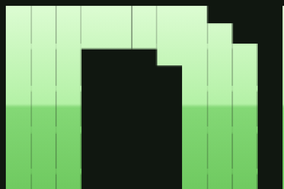

How This Site Works
I moved this site off WordPress and rebuilt it as plain HTML, working with AI the whole way through. I wanted something small and fast that also does a few fun things a WordPress site never could. This post goes through the parts that are worth borrowing, with the code.
The rules
There are no cookies, no trackers and no JavaScript on any page. The home page is one HTML file under 14 KB, with the CSS inline. That number comes from how a new connection starts: the server can usually only send about 14 KB in the first round trip (10 TCP packets of roughly 1,460 bytes each), so a page that fits in that shows up without waiting on a second round trip.
The ASCII art shadow hack
The DUSTIN MONTGOMERY header is plain text in a <pre>, made of block characters like █ ▄ ▀. To get the green stripes I started with the usual trick of clipping a gradient background to the text:
pre.art{
background-image:linear-gradient(#dcfcd2 0%,#b4f1a6 26%,#84d876 27%,
#6ec95f 50%,#3f7a35 51%,#33632a 76%,#27491f 77%,#1d3718 100%);
-webkit-background-clip:text;background-clip:text;
color:transparent;-webkit-text-fill-color:transparent;
}That works, but the browser antialiases the edge of every character, so thin dark seams show up between blocks that are supposed to touch. On a big header it ends up looking like a grid.

A trick that fixes the seams is stacking a few text shadows with no blur and no offset. Each one paints the glyph edges again, and after four of them the half transparent edge pixels are close to solid:
text-shadow:0 0 0 #7ddc6c,0 0 0 #7ddc6c,0 0 0 #7ddc6c,0 0 0 #7ddc6c;The catch is that a shadow is a single colour, and it paints on top of a clipped background, so you lose the gradient. The fix was to do the two jobs separately. The text is drawn solid in the lightest colour of the gradient with the four shadows, which closes the seams, and then a pseudo-element lays the gradient over it with mix-blend-mode:darken:
pre.art{
position:relative;
color:#dcfcd2;
text-shadow:0 0 0 #dcfcd2,0 0 0 #dcfcd2,0 0 0 #dcfcd2,0 0 0 #dcfcd2;
}
pre.art::after{
content:"";position:absolute;inset:0;pointer-events:none;
background:linear-gradient(#dcfcd2 0%,#b4f1a6 26%,#84d876 27%,#6ec95f 50%,
#3f7a35 51%,#33632a 76%,#27491f 77%,#1d3718 100%);
mix-blend-mode:darken;
}Darken keeps the darker of the two colours, one channel at a time. Every colour in the gradient is darker than #dcfcd2, so on top of the text you get exactly the gradient. Every colour in the gradient is also lighter than the panel behind it (#101710), so the background comes through untouched.
A few things will break it. The background has to be darker than the darkest stop. Nothing between the text and the panel can start its own layer (a filter, opacity below 1 or isolation:isolate), or the blend has nothing to blend with and the gradient paints as a solid block. I also started with white text, and the light stripes got grey hairlines on their edges, because a white edge pixel mixed with the dark background comes out grey. Drawing the text in the lightest gradient colour keeps those edges green. The real version also stretches the overlay .3em past the box, since the characters hang a little outside their line box and the bottom row was peeking out white.
Showing where an anchor link lands
A few of the nav links (projects, expert witness, elsewhere) jump to a panel on the home page. The page is short, so on a desktop the scroll barely moves and it isn't obvious anything happened. CSS can tell which element the #anchor in the URL points to with :target, so that panel gets a quick green flash and then keeps a quiet highlight:
.win:target{border-color:#4d6a47}
.win:target>.bar h2{color:#a5eba0}
@media (prefers-reduced-motion:no-preference){
.win:target{animation:hl 1.6s ease-out}
}
@keyframes hl{
0%{border-color:#a5eba0;box-shadow:0 0 0 3px #a5eba055,0 0 18px #6ec95f66}
100%{border-color:#4d6a47;box-shadow:0 0 0 0 transparent}
}Without JavaScript it won't flash again if you click the same link twice in a row, because the URL doesn't change.
You can curl it
Try this in a terminal:
curl https://dustinmontgomery.com/You get the page as text, with DUSTIN in the same green stripes as the website. Every page has two text twins sitting next to it: index.txt (plain) and index.ansi (the same text with 24-bit colour codes). A Cloudflare Worker looks at the user agent and hands curl the colour one, and gives Lynx, w3m and wget the plain one, since they would print the colour codes as junk:
const TEXT_CLIENTS = /\b(curl|wget|httpie|xh|lynx|w3m|links|elinks)\b/i;
const COLOUR_CLIENTS = /\b(curl|httpie|xh)\b/i;
// for a page URL ending in "/", fetch index.ansi or index.txt from the
// origin instead and return it as text/plainAdd ?plain for no colour or ?html for the real page. In a browser you can read a plain twin directly, like /blog/index.txt. The Worker runs on Cloudflare's servers and never in your browser, so the no JavaScript rule still holds for visitors.
The twins come out of the small Python script that builds the site. It turns each finished page into text, wraps it at 72 columns and lists the links as numbered references at the bottom. Only DUSTIN makes it into the text version, because MONTGOMERY is 124 characters wide and would wrap in an 80 column terminal.
Hosting it for free
Apart from renewing the domain, this site costs nothing to run.
GitHub Pages serves the files straight from a branch of the repo. An empty .nojekyll file in the root tells it to skip Jekyll and serve the files exactly as they are, which matters if you ever need a folder that starts with an underscore or a dot.
Cloudflare's free plan sits in front of it. It handles the DNS and HTTPS and runs the Worker, which gets 100,000 requests a day for free. Its Email Routing forwards the addresses on the domain to a normal inbox, also for free, so there is no mail host to pay for either.
Two settings are worth knowing about if you put Cloudflare's proxy in front of GitHub Pages. Set SSL to Full, because Flexible gets stuck in a redirect loop with GitHub's Enforce HTTPS. And turn on Always Use HTTPS, because a Worker answers before GitHub ever gets the chance to redirect plain http requests.
Moving off WordPress without breaking links
The old site had posts at URLs like /seedless-torrents.html and /dtc-ecommerce-case-study/, plus WordPress short links like /?p=1453. GitHub Pages can't do redirects, so the Worker keeps a map of old paths to new ones and answers with a 301. The case studies all became sections of one page, so those redirect to an anchor, like /seo-consulting/#dtc-ecommerce. WordPress leftovers like /wp-content/ get a 410, which tells search engines they are gone for good rather than missing.
The small stuff
Every page prefetches the other main pages with <link rel="prefetch">, and the Worker adds a Speculation-Rules header so Chrome prerenders a page when you hover over a link to it. Sending the rules as a header instead of a <script type="speculationrules"> tag keeps the page source free of script tags.
The image you see when a link to this site is shared on X or LinkedIn is the same ASCII header, rendered to a 1200 by 630 PNG by headless Chromium during the build, so it updates itself when the bio changes. The other images are WebP, with their width and height set so nothing jumps around while they load.
The home page also carries microformats (an h-card with rel="me" links to my profiles), the posts are marked up as h-entry and there is an RSS feed, so IndieWeb tools and feed readers can follow along without any of the usual widgets.
If you enjoyed this read, you might also consider signing up for my newsletter.